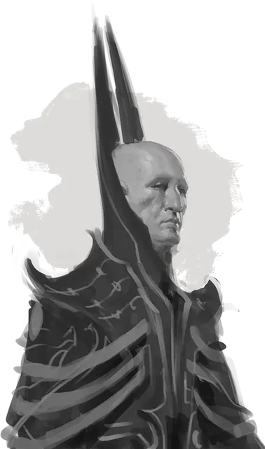

Иллюзионист
Illusionist
Средний Гуманоид (Любая раса), любое мировоззрение

Класс Доспеха 12 (15 с доспехами мага)
Хиты 38 (7к8 + 7)
Скорость 30 футов
| мод | спас | ||
|---|---|---|---|
| СИЛ | 9 | −1 | −1 |
| ЛОВ | 14 | +2 | +2 |
| ТЕЛ | 13 | +1 | +1 |
| мод | спас | ||
|---|---|---|---|
| ИНТ | 16 | +3 | +5 |
| МДР | 11 | +0 | +2 |
| ХАР | 12 | +1 | +1 |
Навыки История +5, Магия +5
Чувства пассивное Восприятие 10
Языки любые четыре языка
Опасность 3 (700 опыта)
Бонус мастерства +2
Среда обитания Город
Особенности
Использование заклинаний. Иллюзионист является заклинателем 7-го уровня. Его базовой характеристикой является Интеллект (Сл спасброска от заклинания 13, +5 к попаданию атаками заклинаниями). У него подготовлены следующие заклинания волшебника:
• Заговоры (неограниченно): пляшущие огоньки [dancing lights], волшебная рука [mage hand], малая иллюзия [minor illusion], ядовитые брызги [poison spray].
• 1 уровень (4 ячейки): сверкающие брызги [color spray], маскировка [disguise self], доспехи мага [mage armor], волшебная стрела [magic missile].
• 2 уровень (3 ячейки): невидимость [invisibility], отражения [mirror image], воображаемая сила [phantasmal force]*.
• 3 уровень (3 ячейки): образ [major image], призрачный скакун [phantom steed].
• 4 уровень (1 ячейки): воображаемый убийца [phantasmal killer]*.
*Заклинание Иллюзии уровня 1 или выше.
Смещение (Перезаряжается после накладывания Иллюзионистом заклинания Иллюзии уровня 1 или выше). Бонусным действием иллюзионист создает иллюзию, из–за которой иллюзионист кажется находящимся в нескольких дюймах в стороне от его настоящего положения, заставляя любое существо с помехой совершать броски атак по иллюзионисту. Эффект прекращается, если иллюзионист наносит урон, становится недееспособным или его скорость становится 0.
Действия
Боевой посох. Рукопашная атака оружием: +1 к попаданию, досягаемость 5 футов, одна цель. Попадание: Дробящий урон 2 (1к6 – 1) или дробящий урон 3 (1к8–1) если используется двумя руками.
Описание
Иллюзионисты – специализированные волшебники, которые искажают свет, звук, тень, и даже сознание, чтобы создать ложные и квазиреальные эффекты. Они могут быть броскими и используют свои силы явными и очевидными способами, или тайно и изящно, используя свою магию, чтобы скрыть правду.